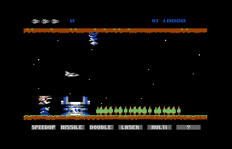
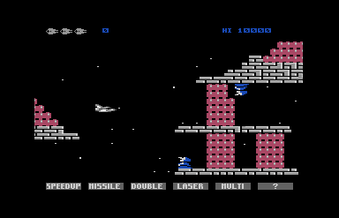
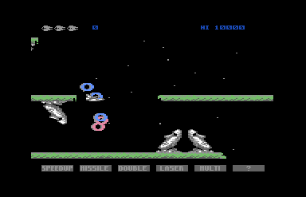
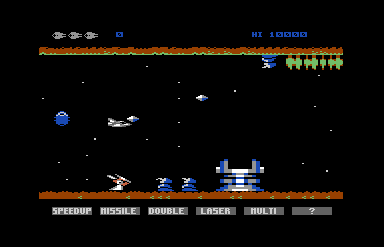
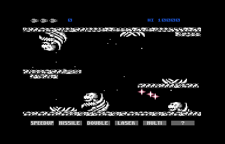
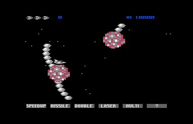
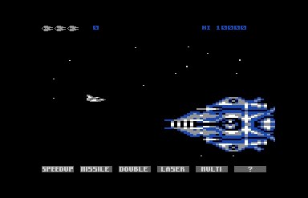
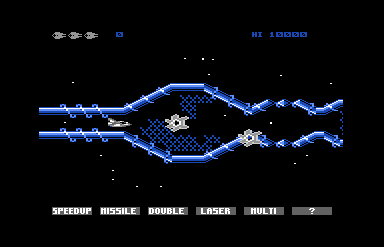
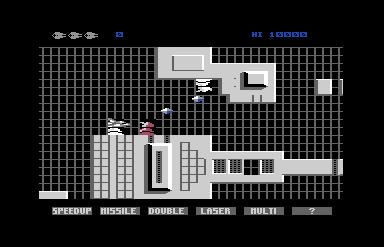

<meta charset="utf-8">
<meta name="viewport" content="width=device-width, initial-scale=1">
<title>Gradius</title>
<link rel="preconnect" href="https://fonts.googleapis.com">
<link rel="stylesheet" href="https://fonts.googleapis.com/css2?family=Lato:wght@400;700;900&family=IBM+Plex+Mono:wght@400;500&display=swap">
<style>
:root{
  --bg:#23262d; --paper:#e9e7e1; --surface:#ffffff; --surface-2:#f1efea; --line:#d5d3cc; --line-soft:#e0ded8;
  --ink:#2f3136; --ink-soft:#55585f; --ink-mute:#80838a;
  --link:#1f5fa8; --link-hover:#154480; --accent:#1f5fa8;
  --amber:#c25a00; --cyan:#1f5fa8; --coral:#d04a3a; --green:#2a8a4a; --violet:#4a5bd6; --hl:#fff0c2;
  --chip:#2f3136; --chip-ink:#ffffff;
  --c64blue:#40318d; --c64grey:#686868;
  --fd:'Lato',system-ui,sans-serif; --fb:'Lato',system-ui,sans-serif; --fm:'IBM Plex Mono',ui-monospace,Menlo,monospace;
  --col:1080px; --gx:68px; --fs:17px; --lh:1.6; --hw:900; --h1:46px; --h2:26px; --sy:48px; --pp:26px; --r:10px;
  --plate-shadow:0 1px 2px rgba(0,0,0,.05),0 4px 14px rgba(0,0,0,.05);
}
*{box-sizing:border-box}
html{background:var(--bg);min-height:100%}
body{background:var(--paper);color:var(--ink);font-family:var(--fb);font-size:var(--fs);line-height:var(--lh);max-width:var(--col);margin:0 auto;min-height:100vh;padding:0 0 4rem}
h1,h2,h3{font-weight:var(--hw);letter-spacing:-.01em;text-wrap:balance;color:var(--ink);margin:0}
.wrap{padding:0 var(--gx)}
.hero{padding:48px var(--gx) 8px;text-align:left}
.eyebrow{font-family:var(--fm);font-size:12px;letter-spacing:.08em;text-transform:uppercase;color:var(--ink-mute);margin:0 0 10px}
.hero h1{font-size:var(--h1);line-height:1.15;letter-spacing:-.02em;margin:0 0 14px}
.hero .sub{margin:0 0 .6em;color:var(--ink-soft)}
section{padding:var(--sy) 0 24px}
section:last-of-type{border-bottom:none}
.fig{font-family:var(--fm);font-size:12px;letter-spacing:.08em;text-transform:uppercase;color:var(--ink-mute);margin:0 0 10px}
h2.t{font-size:var(--h2);margin-bottom:12px}
.lede{color:var(--ink-soft);margin:0 0 30px}
.plate{background:var(--surface);border:1px solid var(--line);border-radius:var(--r);padding:var(--pp);box-shadow:var(--plate-shadow)}
.cap{font-size:14px;color:var(--ink-mute);margin-top:14px;line-height:1.55}
.cap b{color:var(--ink);font-weight:700}
code{font-family:var(--fm);font-size:.82em;background:var(--chip);color:var(--chip-ink);border-radius:4px;padding:2px 6px;white-space:nowrap}
.gr-two{display:grid;grid-template-columns:1fr 1fr;gap:16px}
.gr-two img{width:100%;image-rendering:pixelated;border-radius:6px;display:block}
.gr-cv{width:100%;image-rendering:pixelated;display:block;background:#000;border-radius:6px}
.gr-bar{display:flex;flex-wrap:wrap;gap:8px;align-items:center;margin:0 0 12px;font-family:var(--fm);font-size:13px}
.gr-btn{font:inherit;font-family:var(--fm);font-size:13px;background:var(--surface-2);border:1px solid var(--line);border-radius:6px;padding:5px 10px;cursor:pointer;color:var(--ink)}
.gr-btn[aria-pressed="true"]{background:var(--ink);color:#fff;border-color:var(--ink)}
.gr-range{flex:1;min-width:160px}
.gr-out{font-family:var(--fm);font-size:13px;color:var(--ink-soft);margin-top:10px;min-height:1.5em}
.gr-tbl{border-collapse:collapse;width:100%;font-size:14px}
.gr-tbl th,.gr-tbl td{border-bottom:1px solid var(--line-soft);padding:6px 8px;text-align:left;vertical-align:top}
.gr-tbl th{font-family:var(--fm);font-size:12px;letter-spacing:.04em;text-transform:uppercase;color:var(--ink-mute);font-weight:500}
.gr-tbl td.n{font-family:var(--fm);text-align:right;white-space:nowrap}
.gr-scroll{overflow-x:auto}
.gr-strip{display:block;image-rendering:pixelated;max-width:none}
.gr-gap{margin-top:12px}
@media (max-width:720px){:root{--gx:16px;--h1:34px}.gr-two{grid-template-columns:1fr}}
.gr-three{display:grid;grid-template-columns:1fr 1fr 1fr;gap:12px}
.gr-three img{width:100%;image-rendering:pixelated;border-radius:6px;display:block}
.gr-split{display:grid;grid-template-columns:1fr 1fr;gap:16px;align-items:start}
@media (max-width:720px){.gr-three,.gr-split{grid-template-columns:1fr}}
.gr-shot{width:100%;max-width:640px;image-rendering:pixelated;border-radius:6px;display:block}
</style>
<!-- tabs -->
<header class="hero">
  <p class="eyebrow">1987 · Konami</p>
  <h1>Gradius</h1>
  <p class="sub">The eight stages, each stage's scenery drawn whole from its map, with the checkpoint where a lost life starts again.</p>
</header>
<main class="wrap">

<section>
  <p class="fig">01 · The stages</p>
  <h2 class="t">Seven maps for eight stages</h2>
  <p class="lede">Every stage is in memory from the start. Stage 4 reads stage 1's map upside down, and stage 6 has no scenery at all.</p>
  <div class="plate">
    <div class="gr-scroll"><table class="gr-tbl" id="gr-stages"></table></div>
    <p class="cap">From the listing: each stage's map start (<code>map_starts</code>), character set (<code>stage_charset_lo</code>), row colours (<code>stage_colours_lo</code>) and checkpoint (<code>checkpoint_pos</code>). The columns are the stretch between the event that turns the scenery on and the event that stops the scroll, read from the stage's event list. Pictures taken in VICE on an NTSC C64.</p>
  </div>
  <p>A stage is a list of events and a map. The events (<code>run_events</code>, <code>$7307</code>) fire as the screen scrolls past their positions, one position per column: enemy waves, the music's two starts, and the two that matter for the scenery. Event 16 (<code>start_tune2</code>, <code>$7431</code>) points the map at its start and turns the scenery on. Event 12 (<code>event_attack</code>, <code>$73DD</code>) stops the scroll, hands the background to a star field and starts the stage's attack, which ends in the boss.</p>
  <p>The map is a stream of bytes, read one column of 19 rows at a time (<code>map_column</code>, <code>$4EA9</code>): a byte of <code>$7F</code> or more is a character, and a smaller byte is a run of that many empty rows. The <a href="index.html#map">How it works</a> page steps through it column by column.</p>
</section>
<section>
  <p class="fig">02 · Stage 1</p>
  <h2 class="t">The volcanoes</h2>
  <p class="lede">Ground along the top and bottom of the screen, trees and two volcanoes that throw rocks.</p>
  <div class="plate">
    
    <div class="gr-scroll gr-gap"><canvas id="gr-strip-0" class="gr-strip"></canvas></div>
    <p class="cap" id="gr-cap-0">Every column of the scenery, drawn by the page from the map, the stage's character set and its row colours in the listing. The dashed line is the checkpoint.</p>
  </div>
</section>
<section>
  <p class="fig">03 · Stage 2</p>
  <h2 class="t">The pink blocks</h2>
  <p class="lede">Towers and walls of pink blocks, drawn with a handful of characters.</p>
  <div class="plate">
    
    <div class="gr-scroll gr-gap"><canvas id="gr-strip-1" class="gr-strip"></canvas></div>
    <p class="cap" id="gr-cap-1">Every column of the scenery, drawn by the page from the map, the stage's character set and its row colours in the listing. The dashed line is the checkpoint.</p>
  </div>
</section>
<section>
  <p class="fig">04 · Stage 3</p>
  <h2 class="t">The Moai</h2>
  <p class="lede">Floating islands with stone heads that open their mouths and fire rings.</p>
  <div class="plate">
    
    <div class="gr-scroll gr-gap"><canvas id="gr-strip-2" class="gr-strip"></canvas></div>
    <p class="cap" id="gr-cap-2">Every column of the scenery, drawn by the page from the map, the stage's character set and its row colours in the listing. The dashed line is the checkpoint.</p>
  </div>
</section>
<section>
  <p class="fig">05 · Stage 4</p>
  <h2 class="t">The volcanoes, upside down</h2>
  <p class="lede">Stage 1's map read from the bottom up, through a character set drawn upside down.</p>
  <div class="plate">
    
    <div class="gr-scroll gr-gap"><canvas id="gr-strip-3" class="gr-strip"></canvas></div>
    <p class="cap" id="gr-cap-3">Every column of the scenery, drawn by the page from the listing. The dashed line is the checkpoint. Drawn with <code>map_column_up</code>'s order: the first byte of each column goes to row 21 and the rest fill upwards.</p>
  </div>
</section>
<section>
  <p class="fig">06 · Stage 5</p>
  <h2 class="t">The bones</h2>
  <p class="lede">Rib cages and skulls; heads rise out of the floor and come down from the ceiling.</p>
  <div class="plate">
    
    <div class="gr-scroll gr-gap"><canvas id="gr-strip-4" class="gr-strip"></canvas></div>
    <p class="cap" id="gr-cap-4">Every column of the scenery, drawn by the page from the map, the stage's character set and its row colours in the listing. The dashed line is the checkpoint.</p>
  </div>
</section>
<section>
  <p class="fig">07 · Stage 6</p>
  <h2 class="t">Spheres and tentacles</h2>
  <p class="lede">Open space: pink spheres and tentacles of linked segments, then the Big Core.</p>
  <div class="plate">
    <div class="gr-two"></div>
    <p class="cap">Stage 6 in VICE. Its event list has no event 16, so the scenery never comes on, although <code>map_starts</code> points it at stage 2's map at <code>$AD00</code>. Its event 12 comes at position 312, earlier than on any other stage.</p>
  </div>
</section>
<section>
  <p class="fig">08 · Stage 7</p>
  <h2 class="t">The blue cells</h2>
  <p class="lede">Blue tubes and cell walls, some of which the shots can break.</p>
  <div class="plate">
    
    <div class="gr-scroll gr-gap"><canvas id="gr-strip-6" class="gr-strip"></canvas></div>
    <p class="cap" id="gr-cap-6">Every column of the scenery, drawn by the page from the listing. The dashed line is the checkpoint. Stage 7's character set starts at <code>$FADC</code> and runs over code and tables, so some of its glyphs are those bytes; the map uses only characters it draws.</p>
  </div>
</section>
<section>
  <p class="fig">09 · Stage 8</p>
  <h2 class="t">The fortress</h2>
  <p class="lede">The fortress: walls and machinery over a grid that the stage draws into the space character.</p>
  <div class="plate">
    
    <div class="gr-scroll gr-gap"><canvas id="gr-strip-7" class="gr-strip"></canvas></div>
    <p class="cap" id="gr-cap-7">Every column of the scenery, drawn by the page from the listing. The dashed line is the checkpoint. The space character is drawn here as the game leaves it in memory, empty; during the stage <code>irq_stage8</code> rewrites it into a grid, as the picture above shows.</p>
  </div>
</section>
</main>

<footer style="margin:16px 0 0;padding:22px var(--gx) 0;border-top:1px solid #e0ded8;font-family:'IBM Plex Mono',ui-monospace,Menlo,monospace;font-size:12px;color:#80838a"><a href="https://github.com/gamesexplained/gamesexplained" style="color:#1f5fa8;text-decoration:none">GitHub</a> · <a href="https://discord.gg/3V9GWyRDWV" style="color:#1f5fa8;text-decoration:none">Discord</a><br>© Games Explained contributors. Write-ups, facts and symbol maps are available under <a href="https://creativecommons.org/licenses/by-sa/4.0/" style="color:#1f5fa8;text-decoration:none">CC BY-SA 4.0</a>; code under <a href="https://opensource.org/licenses/MIT" style="color:#1f5fa8;text-decoration:none">MIT</a></footer>
<script src="../../lib/c64.js"></script>
<script>
/* gr-map */
// The stages' scenery, read from the listing as the game reads it.
// grStage(ram, s): stage s (0-7)'s tables, as load_stage_charset ($78F6), load_stage_block
// ($7964), load_stage_colours ($799F), stage_setup ($5FFB) and event_scenery ($50C4) find them:
// the upper character set (stage_charset_lo/hi, $78E6/$78EE), the event list (stage_block_lo/hi,
// $7954/$795C), the 25 row colours (stage_colours_lo/hi, $798F/$7997), the two shared multicolours
// (stage_colour1, $5FB9, and stage_colour2, $5FC1), the map's start (map_starts, $50B4/$50BC) and
// whether the stage draws it from the bottom up (stage 4, map_column_up).
// grEvents(ram, ev): the event list as run_events ($7307) reads it once it is at $8000: 115 events,
// each a position (low byte at +$000, high at +$073), a type (+$0EC) and a parameter (+$15F).
// grScenery(ram, s): the columns of map the stage scrolls through: from the position of event 16
// (start_tune2, which turns the scenery on through event_scenery) to the next event 12
// (event_attack, which sets boss_mode and stops the scroll), or null when no event turns it on.
// grColumn(ram, p, up): one column as map_column ($4EA9) or map_column_up ($54DF) draws it from
// map byte p: 19 character codes for rows 3 to 21, top to bottom, and the bytes it read. A byte of
// $7F or more is a character for the next row; a smaller one is that many rows of spaces ($20).
function grStage(ram, s) {
  const w = (lo, hi) => ram[lo + s] | ram[hi + s] << 8;
  return {
    charset: w(0x78E6, 0x78EE), events: w(0x7954, 0x795C), colours: w(0x798F, 0x7997),
    map: w(0x50B4, 0x50BC), mc1: ram[0x5FB9 + s] & 15, mc2: ram[0x5FC1 + s] & 15, up: s === 3,
  };
}
function grEvents(ram, ev) {
  const out = [];
  for (let i = 0; i < 0x73; i++)
    out.push({ i, pos: ram[ev + i] | ram[ev + 0x73 + i] << 8, type: ram[ev + 0xEC + i], param: ram[ev + 0x15F + i] });
  return out;
}
function grScenery(ram, s) {
  const E = grEvents(ram, grStage(ram, s).events);
  const on = E.find((e) => e.type === 16);
  if (!on) return null;
  const off = E.find((e) => e.type === 12 && e.pos > on.pos);
  return { from: on.pos, to: off ? off.pos : on.pos, columns: off ? off.pos - on.pos : 0 };
}
function grColumn(ram, p, up) {
  const rows = [];
  let n = 0;
  while (rows.length < 19) {
    const b = ram[p + n++];
    if (b >= 0x7F) rows.push(b);
    else for (let k = 0; k < b; k++) rows.push(0x20);
  }
  if (rows.length > 19) throw new Error('map column overruns at $' + p.toString(16));
  return { rows: up ? rows.reverse() : rows, read: n };
}
// end of gr-map

</script>
<script>
// Draws the stage table and every stage's scenery from the listing, with gr-map's readers.
(function () {
  const $ = (id) => document.getElementById(id);
  const P = C64.PAL, hex = C64.hex;
  const NAMES = ['The volcanoes', 'The pink blocks', 'The Moai', 'The volcanoes, upside down', 'The bones', 'Spheres and tentacles', 'The blue cells', 'The fortress'];
  // One character cell as the video chip draws it in multicolour character mode: colour RAM's
  // nibble from 8 up is multicolour in its low three bits, below 8 hires in that colour.
  function cell(ctx, cs, code, x, y, col, mc1, mc2) {
    if (col & 8) C64.drawGlyphMC(ctx, cs, code, x, y, 1, [P[0], P[mc1], P[mc2], P[col & 7]]);
    else C64.drawGlyph(ctx, cs, code, x, y, 1, P[col], P[0]);
  }
  // The 2 KB character set the stage plays with: chars_low at $3800, then the stage's own 1 KB,
  // which load_stage_charset copies to $3C00.
  function charset(ram, st) {
    const cs = new Uint8Array(0x800);
    cs.set(ram.subarray(0x3800, 0x3C00), 0); cs.set(ram.subarray(st.charset, st.charset + 0x400), 0x400);
    return cs;
  }
  C64.load('listing.json').then(({ ram }) => {
    const rows = ['<tr><th>Stage</th><th>Map</th><th>Characters</th><th>Columns</th><th>Checkpoint</th></tr>'];
    for (let s = 0; s < 8; s++) {
      const st = grStage(ram, s), sc = grScenery(ram, s);
      const cp = ram[0xFEA0 + s] | ram[0xFEA8 + s] << 8, hasCp = ram[0xFE98 + s] !== 0;
      rows.push('<tr><td>' + (s + 1) + ' · ' + NAMES[s] + '</td><td><code>' + hex(st.map) + '</code>' + (s === 3 ? ' (stage 1\'s, upside down)' : '') +
        '</td><td><code>' + hex(st.charset) + '</code></td><td class="n">' + (sc ? sc.columns : 'none') +
        '</td><td>' + (hasCp ? 'position ' + cp + (sc ? ', column ' + (cp - sc.from) : '') : 'none') + '</td></tr>');
      if (!sc) continue;
      const cs = charset(ram, st), cv = $('gr-strip-' + s);
      const ctx = C64.canvas(cv, sc.columns * 8, 19 * 8);
      ctx.fillStyle = P[0]; ctx.fillRect(0, 0, cv.width, cv.height);
      let p = st.map;
      for (let c = 0; c < sc.columns; c++) {
        const col = grColumn(ram, p, st.up);
        col.rows.forEach((code, r) => cell(ctx, cs, code, c * 8, r * 8, ram[st.colours + 3 + r] & 15, st.mc1, st.mc2));
        p += col.read;
      }
      cv.style.width = (sc.columns * 16) + 'px'; cv.style.height = (19 * 16) + 'px';
      if (hasCp) {
        const x = (cp - sc.from) * 8 + 0.5;
        ctx.strokeStyle = '#ffffff'; ctx.setLineDash([4, 3]); ctx.lineWidth = 1;
        ctx.beginPath(); ctx.moveTo(x, 0); ctx.lineTo(x, cv.height); ctx.stroke();
        ctx.setLineDash([]); ctx.fillStyle = '#ffffff'; ctx.font = '7px monospace'; ctx.fillText('CP', x + 2, 8);
      }
      const capEl = $('gr-cap-' + s);
      capEl.innerHTML = sc.columns + ' columns from map byte <code>' + hex(st.map) + '</code>, positions ' + sc.from + ' to ' + sc.to + '. ' + capEl.innerHTML;
    }
    $('gr-stages').innerHTML = rows.join('');
  }).catch((e) => { document.querySelectorAll('.gr-strip').forEach((c) => { c.insertAdjacentText('afterend', 'Could not draw the stages: ' + e.message); }); });
})();
</script>
